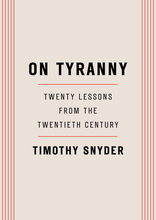

55:34 · 5 OPERE
Un libro del 2017 che parla indirettamente del 2021...
Il filo del discorso
Un libro del 2017 può diventare uno strumento per interrogare il 2021? Dr Divago rilegge On Tyranny di Timothy Snyder e sposta le sue venti lezioni contro l’autoritarismo dal contesto della elezione di Trump alle restrizioni e ai conflitti politici della pandemia. Il libro non è presentato come una previsione sanitaria: è il relatore a costruire un confronto fra i criteri formulati allora e la situazione che osserva quattro anni dopo. La sua posizione rimane fortemente critica verso Trump, ma contesta anche ciò che considera un uso selettivo degli argomenti democratici da parte dei suoi oppositori. Prima di entrare nelle lezioni, il discorso insiste sulla responsabilità intellettuale. Le note e i riferimenti sono descritti come sentieri che permettono al lettore di controllare un fatto e di proseguire oltre il testo. La critica alla assenza di note nella copia di Snyder appartiene al relatore e non viene trasformata nella affermazione che lo autore non abbia usato nessuna fonte. Il richiamo a The Empty Campus e alla vicenda di Friedrich Adler ed Einstein introduce un criterio personale: una opposizione al potere dovrebbe mettere al centro un principio condivisibile, invece di costruire soltanto il prestigio di chi protesta. La rilettura segue poi alcuni nuclei del libro. Non obbedire in anticipo significa domandarsi quanto potere venga offerto spontaneamente a chi governa; difendere le istituzioni richiede di distinguere la loro funzione dalle persone che le occupano. La deumanizzazione degli avversari, la etica delle professioni e la disponibilità a dire di no diventano altrettanti punti di confronto. Dr Divago applica questi temi ai medici, ai giudici, ai mezzi di informazione e alle proteste in Australia e in Italia. La scheda conserva la struttura della analogia, distinguendola dalla dimostrazione che ogni misura sanitaria, coalizione parlamentare o intervento di polizia costituisca una dittatura. Linguaggio, libri e fatti occupano la parte centrale della discussione. Ripetere formule ricevute, secondo il relatore, riduce la capacità di costruire una cornice più ampia. Kant diventa il riferimento per il coraggio di usare il proprio intelletto. Pur condividendo la difesa della lettura, Dr Divago rifiuta una opposizione rigida fra libri e schermi: il problema è come si usano, quali confronti permettono e quali fonti rendono controllabili. La distinzione fra ciò che si desidera ascoltare e ciò che accade sostiene anche il successivo passaggio dalla libertà individuale alla partecipazione democratica. Il finale affronta le piattaforme digitali, la protesta pubblica, la vita privata e le parole emergenza ed eccezione. Il castello di Kafka accompagna il timore di un governo percepito come distante e onnipotente. La conclusione torna alla gestione del terrore come possibile risorsa politica e chiede coerenza a chi denuncia un autoritarismo ma ne trascura altri. Questa è la tesi di Dr Divago. I riscontri distinguono le critiche di politica sanitaria dalla negazione della malattia, il dissenso dalle accuse non provate di regia occulta, e la tutela costituzionale della espressione dai diversi obblighi degli attori pubblici e delle piattaforme private. Anche il richiamo alle elezioni statunitensi del 2020 viene mantenuto come posizione del video, senza certificare brogli o ridurre tutti i tentativi di contestazione a soli ricorsi giudiziari.
I libri nel discorso

On Tyranny: Twenty Lessons from the Twentieth Century / Sulla tirannide
Copertina: Crown, edizione inglese in brossura del 28 febbraio 2017, 128 pagine, ISBN 9780804190114. Copertina ufficiale dell’opera originale, distinta dalle traduzioni italiane e dalla successiva edizione illustrata.
Copertina inglese Crown del 2017, ottenuta dal servizio pubblico dell’editore e controllata visivamente. Il relatore legge in inglese, ma la specifica tiratura fisica non è accertata. Non viene attribuita questa copertina alla traduzione italiana.
Timothy Snyder, On Tyranny, venti lezioni, 2017: titolo e autore espliciti in apertura e passaggi letti nel corso del video.
Passaggio 0:00 ↗ · Fonti e libro ↗
Our Malady: Lessons in Liberty from a Hospital Diary
Identificazione probabile
Copertina: Crown, 8 settembre 2020, 192 pagine, ISBN 9780593238899. Saggio che muove dalla esperienza ospedaliera dello autore; copertina inglese ufficiale, non attribuita con certezza a una copia nel filmato.
Identificazione probabile: il titolo non è pronunciato nella introduzione del video. Il catalogo Crown riscontra il ricovero del 29 dicembre 2019 e il nesso fra sanità, diritti e libertà. La corrispondenza non equivale a riscontro di ogni dettaglio clinico riferito dal relatore.
Libro successivo sulla sanità ricavato dalla esperienza ospedaliera del 2019: titolo non pronunciato, identificazione probabile in Our Malady.
Passaggio 1:37 ↗ · Fonti e libro ↗
The Empty Campus
Copertina: Lulu · edizione inglese di riferimento
Immagine associata all’ISBN di riferimento e controllata visivamente; edizione e traduzione non identificate come quelle citate o lette nel video.
The Empty Campus, il campus vuoto: titolo del proprio libro esplicitamente richiamato dal relatore.
Passaggio 10:52 ↗ · Fonti e libro ↗
Risposta alla domanda: che cos’è l’Illuminismo?
Identificazione probabile
Copertina della raccolta che comprende il saggio sull’Illuminismo: Firenze University Press · Sette scritti politici liberi · 2011 · a cura di Maria Chiara Pievatolo
Copertina del volume cartaceo FUP che comprende il saggio, riscontrato dal catalogo universitario. L’ISBN appartiene alla raccolta; il filmato non annuncia un’edizione e il titolo del saggio è un’identificazione probabile della citazione.
Massima kantiana sul coraggio di usare il proprio intelletto: titolo del saggio non pronunciato, collegamento testuale riconoscibile.
Passaggio 35:26 ↗ · Fonti e libro ↗
Il castello (Das Schloss)
Copertina: Suhrkamp, edizione tedesca in brossura, 423 pagine, prima uscita della collana 2006, ristampa 10 luglio 2025; romanzo pubblicato postumo nel 1926.
Immagine autentica dell’opera, controllata visivamente; l’edizione di riferimento non è attribuita al filmato.
Il castello di Kafka è nominato a proposito della distanza del governo.
Passaggio 52:00 ↗ · Fonti e libro ↗